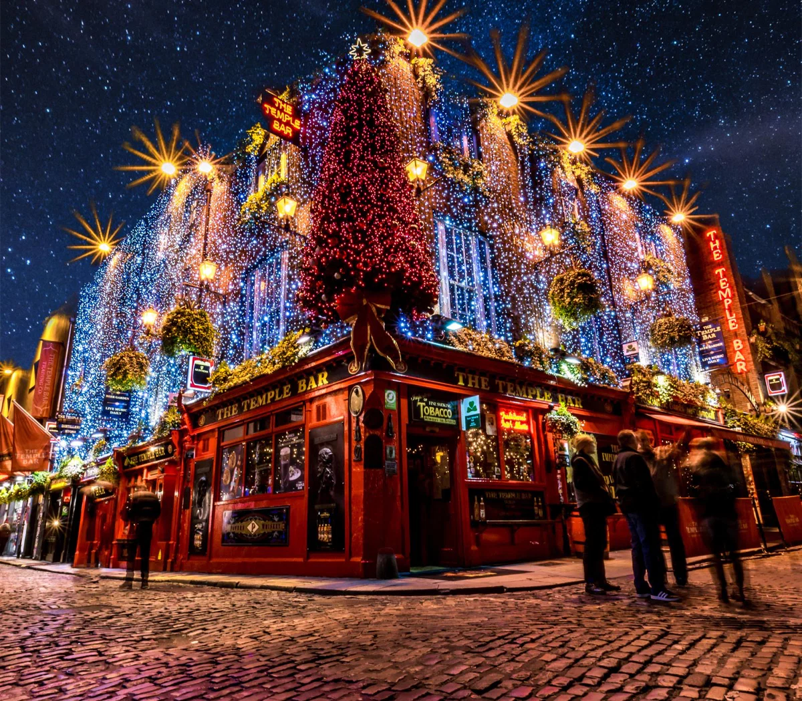
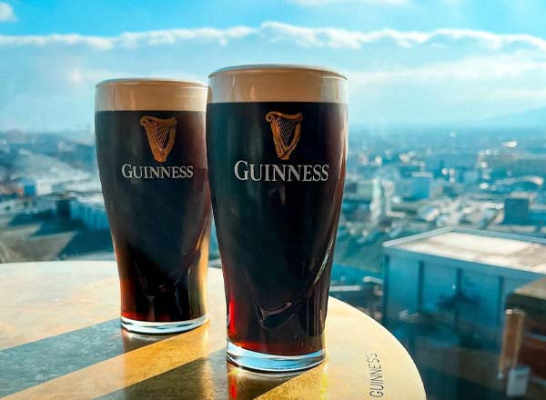
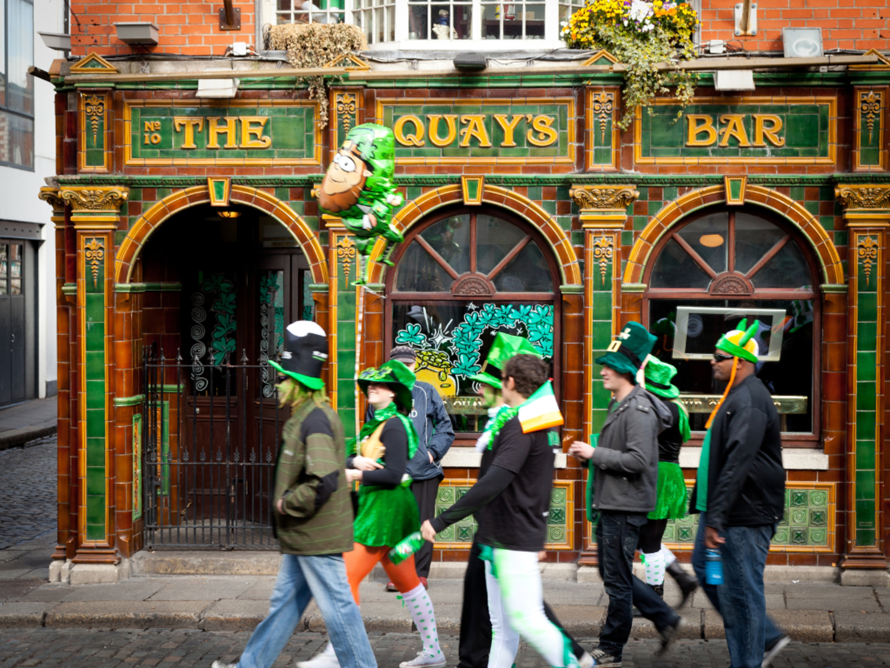

My Take
Dublin is one of those cities where you don't go for a packed schedule — you go for the atmosphere. It's smaller, super social, and honestly revolves around pub culture.
It's not the kind of place where you're running from attraction to attraction. The best moments come from just being out, meeting people, and going wherever the night takes you.
Best For
- Quick weekend trips
- Going out + social scenes
- Traveling with friends
- Low-pressure itineraries
What to Do
Must-Do
Guinness Storehouse — The 360° view from the top is actually incredible. Temple Bar area — Tourist trap but you have to see it. Trinity College — Great for walking through, historic vibes.
Experiences
Pub hopping — Skip the organized tours, just walk and explore real pubs. Live music nights — A lot of pubs have live music, completely changes the vibe. Walking through the city — Very manageable, everything's close together.

🍻 Pub Culture (the whole point)
Dublin is all about pubs. You'll end up bouncing between a few, staying longer than planned, and meeting random people — that's what makes it fun.
Don't overthink it. Walk around, find a pub that looks decent, order a pint, and chat with whoever's sitting next to you. That's the Dublin experience.
🎶 Live Music Nights
A lot of pubs have live music, which completely changes the vibe. It feels way more authentic than just going out to a regular bar. The combination of live Irish music, a good pint, and the social atmosphere is actually what makes Dublin special.
Where to Eat & Drink
Casual / Late Night
- Bambino Pizza - Late night pizza spot, surprisingly good
Unexpectedly Good
- Wallace's Tavern - Hidden gem, real Dublin vibe
Brunch / Drinks
- Bow Lane - Great brunch spot with good drinks

Where to Stay
Neighborhoods
Temple Bar area — Central, but loud and touristy.
City center — Best overall for walkability and vibe.
Note: Dublin's not huge — location matters less than you'd think. Most things are walkable.
Budget Options
- Hostels: €18–25/night
- Airbnb: €35–60/night
- Budget hotels: €50–75/night
My Real Tips
- Don't overplan anything. Dublin's best when you're flexible and just go with it.
- Book early for big weekends. St. Patrick's Day and other major events fill up fast.
- Expect lots of American students. Dublin's a popular study abroad destination, so you'll meet a ton of people.
- It's more about vibes than sightseeing. The attractions aren't the point — the pub culture and social atmosphere are.
- Irish people are genuinely friendly. Say hello, chat, be open to conversation. They'll talk to you.
- Rain is consistent. Bring a jacket, it's part of the Dublin experience.
- Walk everywhere. The city's small and walkable. Everything's closer than you think.

Sample Weekend Plan
Friday
Arrive → dinner → Temple Bar and explore
Saturday
Guinness Storehouse → explore neighborhoods → pub hopping → live music if you find it
Sunday
Brunch → chill → head back
Pro tip: The best parts of Dublin happen in pubs late at night. Don't plan every hour — leave room for spontaneous adventures.